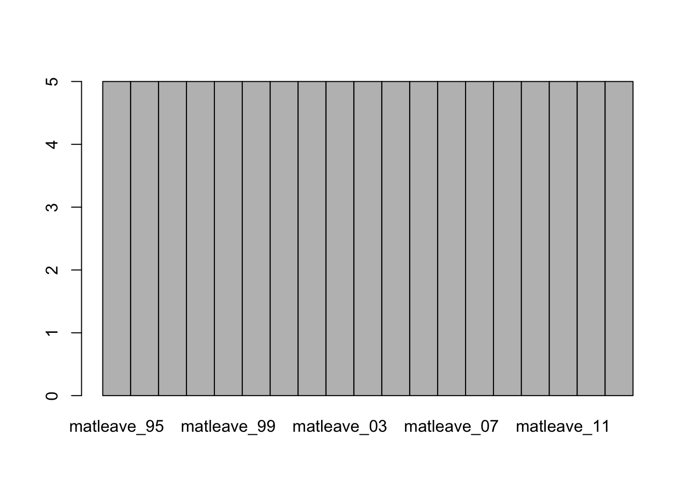
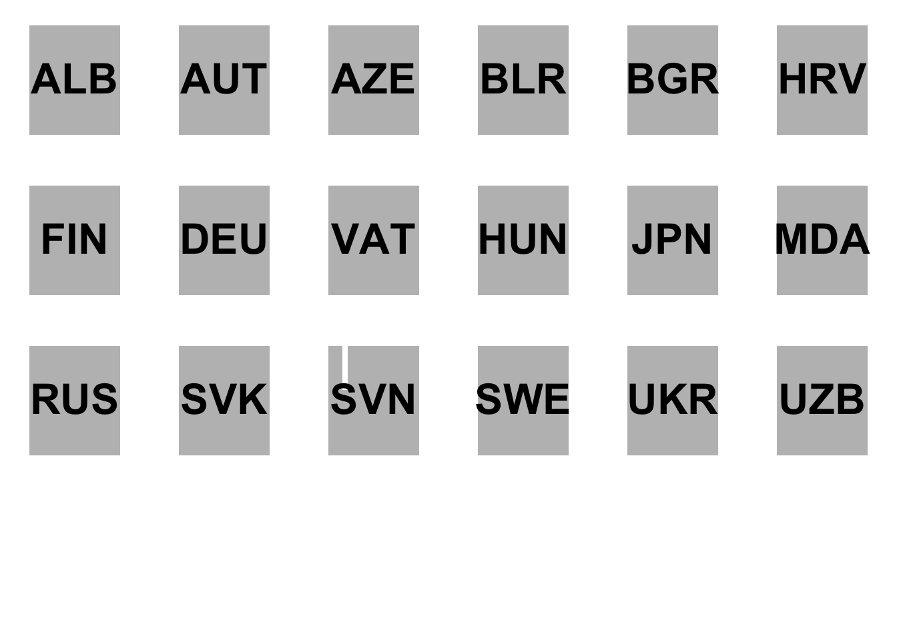

Chapter 5 Selecting-Filtering-Ploting
R base指的是R語言的基本程式庫和核心功能，也被稱為「基本安裝」。R base是所有R程式庫和套件的基礎，提供了R語言的基本資料結構、運算符號、流程控制、函數庫等核心功能。
R base包括了R語言的基本數據類型，如向量、矩陣、數組、列表和因子等，還包括了常用的數學和統計函數，如求和、平均數、標準差、線性回歸和假設檢驗等。此外，R base還提供了許多用於資料處理和探索的工具，如讀寫資料、繪製圖表、資料清理、合併和分組等。
R base通常是R語言的默認安裝選項，也是新手學習R語言的基礎。在此基礎上，使用者可以通過安裝和載入其他R程式庫和套件，擴展R語言的功能和應用範圍，以滿足不同的需求和問題。
5.1 Paid Maternity Leave
本案例將使用R重新製作華盛頓郵報2016年8月13日的一篇報導，該報導探討了美國婦女產假支薪情況。案例中將應用data.frame和基本的繪圖與資料摘要方法。
原始新聞來源：The world is getting better at paid maternity leave. The U.S. is not. - The Washington Post。該篇報導提及，美國因為目前的政策不保障帶薪產假，許多女性感到必須在工作和照顧家庭之間做出選擇，這種性別不平等破壞了她們在工作機會上的平等機會。同時，世界各地的婦女待遇正在逐漸改善。至少190個國家對嬰兒的母親規定了某種形式的帶薪假期，產假待遇在56個國家有所提高。專家表示，現在美國城市和州正通過不同形式的帶薪家庭假法案，這顯示美國雇主正在展示有競爭力的福利不會影響員工表現。特別是科技公司，如Twitter、Facebook和Google等，處於提供員工帶薪產假福利的前沿，美國可能有望追趕其他國家。

5.1.1 Reading .xlsx by readxl package
readxl也包含在tidyverse的套件集中，所以應該已經在前次安裝過，不用特別安裝。- 但
readxl不會隨著tidyverse套件被載入R的執行環境，所以如果要用readxl()來讀取excel檔的話，需要用library(readxl)將其載入。
# Import readxl package
library(readxl)這段程式碼使用read_excel()函式從data資料夾中的WORLD-MACHE_Gender_6.8.15.xls檔案中的Sheet1工作表讀取資料。其中col_names=T為該函式的參數，表示第一列為欄位名稱。讀取後的資料會被Assign給變數df。
# Use read_excel() to convert excel sheet to data.frame
df <- read_excel("data/WORLD-MACHE_Gender_6.8.15.xls", "Sheet1", col_names=T)5.1.2 Previewing data by View(), class(), dim(), str(), summary() and names()
# View(df)
class(df) # [1] "tbl_df" "tbl" "data.frame"## [1] "tbl_df" "tbl" "data.frame"dim(df)## [1] 197 156# Show names of variables (vectors, columns) by names()
names(df)## [1] "country" "iso2" "iso3"
## [4] "region" "wb_econ" "matleave_95"
## [7] "matleave_96" "matleave_97" "matleave_98"
## [10] "matleave_99" "matleave_00" "matleave_01"
## [13] "matleave_02" "matleave_03" "matleave_04"
## [16] "matleave_05" "matleave_06" "matleave_07"
## [19] "matleave_08" "matleave_09" "matleave_10"
## [22] "matleave_11" "matleave_12" "matleave_13"
## [25] "matleave_wrr_95" "matleave_wrr_96" "matleave_wrr_97"
## [28] "matleave_wrr_98" "matleave_wrr_99" "matleave_wrr_00"
## [31] "matleave_wrr_01" "matleave_wrr_02" "matleave_wrr_03"
## [34] "matleave_wrr_04" "matleave_wrr_05" "matleave_wrr_06"
## [37] "matleave_wrr_07" "matleave_wrr_08" "matleave_wrr_09"
## [40] "matleave_wrr_10" "matleave_wrr_11" "matleave_wrr_12"
## [43] "matleave_wrr_13" "bf_dur_95" "bf_dur_96"
## [46] "bf_dur_97" "bf_dur_98" "bf_dur_99"
## [49] "bf_dur_00" "bf_dur_01" "bf_dur_02"
## [52] "bf_dur_03" "bf_dur_04" "bf_dur_05"
## [55] "bf_dur_06" "bf_dur_07" "bf_dur_08"
## [58] "bf_dur_09" "bf_dur_10" "bf_dur_11"
## [61] "bf_dur_12" "bf_dur_13" "mat_bfeed_6mon_95"
## [64] "mat_bfeed_6mon_96" "mat_bfeed_6mon_97" "mat_bfeed_6mon_98"
## [67] "mat_bfeed_6mon_99" "mat_bfeed_6mon_00" "mat_bfeed_6mon_01"
## [70] "mat_bfeed_6mon_02" "mat_bfeed_6mon_03" "mat_bfeed_6mon_04"
## [73] "mat_bfeed_6mon_05" "mat_bfeed_6mon_06" "mat_bfeed_6mon_07"
## [76] "mat_bfeed_6mon_08" "mat_bfeed_6mon_09" "mat_bfeed_6mon_10"
## [79] "mat_bfeed_6mon_11" "mat_bfeed_6mon_12" "mat_bfeed_6mon_13"
## [82] "minage_fem_leg_95" "minage_fem_leg_96" "minage_fem_leg_97"
## [85] "minage_fem_leg_98" "minage_fem_leg_99" "minage_fem_leg_00"
## [88] "minage_fem_leg_01" "minage_fem_leg_02" "minage_fem_leg_03"
## [91] "minage_fem_leg_04" "minage_fem_leg_05" "minage_fem_leg_06"
## [94] "minage_fem_leg_07" "minage_fem_leg_08" "minage_fem_leg_09"
## [97] "minage_fem_leg_10" "minage_fem_leg_11" "minage_fem_leg_12"
## [100] "legal_diff_leg_95" "legal_diff_leg_96" "legal_diff_leg_97"
## [103] "legal_diff_leg_98" "legal_diff_leg_99" "legal_diff_leg_00"
## [106] "legal_diff_leg_01" "legal_diff_leg_02" "legal_diff_leg_03"
## [109] "legal_diff_leg_04" "legal_diff_leg_05" "legal_diff_leg_06"
## [112] "legal_diff_leg_07" "legal_diff_leg_08" "legal_diff_leg_09"
## [115] "legal_diff_leg_10" "legal_diff_leg_11" "legal_diff_leg_12"
## [118] "minage_fem_pc_95" "minage_fem_pc_96" "minage_fem_pc_97"
## [121] "minage_fem_pc_98" "minage_fem_pc_99" "minage_fem_pc_00"
## [124] "minage_fem_pc_01" "minage_fem_pc_02" "minage_fem_pc_03"
## [127] "minage_fem_pc_04" "minage_fem_pc_05" "minage_fem_pc_06"
## [130] "minage_fem_pc_07" "minage_fem_pc_08" "minage_fem_pc_09"
## [133] "minage_fem_pc_10" "minage_fem_pc_11" "minage_fem_pc_12"
## [136] "legal_diff_pc_95" "legal_diff_pc_96" "legal_diff_pc_97"
## [139] "legal_diff_pc_98" "legal_diff_pc_99" "legal_diff_pc_00"
## [142] "legal_diff_pc_01" "legal_diff_pc_02" "legal_diff_pc_03"
## [145] "legal_diff_pc_04" "legal_diff_pc_05" "legal_diff_pc_06"
## [148] "legal_diff_pc_07" "legal_diff_pc_08" "legal_diff_pc_09"
## [151] "legal_diff_pc_10" "legal_diff_pc_11" "legal_diff_pc_12"
## [154] "minwage_ppp_2013" "mw_overtime" "oecd"5.1.3 Select variables
由於所需要的資料為第三欄的變數iso3（為國家代碼）和第六至24欄的matleave95~matleave13共29年的資料，所以需要在df[ , ]中選出這幾欄。只要把所要取的欄以vector的型態放在df[row,col]之col的位置，便可以選出所要的欄。
# Select the 3rd and 6th to 24th columns
matleave <- df[ , c(3, 6:24)]
# Use class(), dim(), and str() to inspect the data
class(matleave)## [1] "tbl_df" "tbl" "data.frame"dim(matleave)## [1] 197 20str(matleave)## tibble [197 × 20] (S3: tbl_df/tbl/data.frame)
## $ iso3 : chr [1:197] "AFG" "ALB" "DZA" "AND" ...
## $ matleave_95: num [1:197] 2 5 3 2 2 2 2 3 1 5 ...
## $ matleave_96: num [1:197] 2 5 3 2 2 2 2 3 1 5 ...
## $ matleave_97: num [1:197] 2 5 3 2 2 2 2 3 1 5 ...
## $ matleave_98: num [1:197] 2 5 3 2 2 2 2 3 1 5 ...
## $ matleave_99: num [1:197] 2 5 3 2 2 2 2 3 1 5 ...
## $ matleave_00: num [1:197] 2 5 3 3 2 2 2 3 1 5 ...
## $ matleave_01: num [1:197] 2 5 3 3 2 2 2 3 1 5 ...
## $ matleave_02: num [1:197] 2 5 3 3 2 2 2 3 1 5 ...
## $ matleave_03: num [1:197] 2 5 3 3 2 2 2 3 1 5 ...
## $ matleave_04: num [1:197] 2 5 3 3 2 2 2 5 1 5 ...
## $ matleave_05: num [1:197] 2 5 3 3 2 2 2 5 1 5 ...
## $ matleave_06: num [1:197] 2 5 3 3 2 2 2 5 1 5 ...
## $ matleave_07: num [1:197] 2 5 3 3 2 2 2 5 1 5 ...
## $ matleave_08: num [1:197] 2 5 3 3 2 2 2 5 1 5 ...
## $ matleave_09: num [1:197] 2 5 3 3 2 2 2 5 1 5 ...
## $ matleave_10: num [1:197] 2 5 3 3 2 2 2 5 NA 5 ...
## $ matleave_11: num [1:197] 2 5 3 3 2 2 2 5 3 5 ...
## $ matleave_12: num [1:197] 2 5 3 3 2 2 2 5 3 5 ...
## $ matleave_13: num [1:197] 2 5 3 3 2 2 2 5 3 5 ...5.1.4 Check & Replace NAs
NA: Not Availablev[is.na(v)]will select all NA cells- 以0取代NA的資料格。避免繪圖產生錯誤
sum(is.na(matleave))的目的是檢測還有沒有NA值。如果有的話is.na()就會是TRUE，那麼加總後，如果不是0，那就代表還有NA。
# is.na() to indicate each element is NA or NOT(TRUE/FALSE)
head(is.na(matleave), n=20)## iso3 matleave_95 matleave_96 matleave_97 matleave_98 matleave_99
## [1,] FALSE FALSE FALSE FALSE FALSE FALSE
## [2,] FALSE FALSE FALSE FALSE FALSE FALSE
## [3,] FALSE FALSE FALSE FALSE FALSE FALSE
## [4,] FALSE FALSE FALSE FALSE FALSE FALSE
## [5,] FALSE FALSE FALSE FALSE FALSE FALSE
## [6,] FALSE FALSE FALSE FALSE FALSE FALSE
## [7,] FALSE FALSE FALSE FALSE FALSE FALSE
## [8,] FALSE FALSE FALSE FALSE FALSE FALSE
## [9,] FALSE FALSE FALSE FALSE FALSE FALSE
## [10,] FALSE FALSE FALSE FALSE FALSE FALSE
## [11,] FALSE FALSE FALSE FALSE FALSE FALSE
## [12,] FALSE FALSE FALSE FALSE FALSE FALSE
## [13,] FALSE FALSE FALSE FALSE FALSE FALSE
## [14,] FALSE FALSE FALSE FALSE FALSE FALSE
## [15,] FALSE FALSE FALSE FALSE FALSE FALSE
## [16,] FALSE FALSE FALSE FALSE FALSE FALSE
## [17,] FALSE FALSE FALSE FALSE FALSE FALSE
## [18,] FALSE FALSE FALSE FALSE FALSE FALSE
## [19,] FALSE FALSE FALSE FALSE FALSE FALSE
## [20,] FALSE FALSE FALSE FALSE FALSE FALSE
## matleave_00 matleave_01 matleave_02 matleave_03 matleave_04 matleave_05
## [1,] FALSE FALSE FALSE FALSE FALSE FALSE
## [2,] FALSE FALSE FALSE FALSE FALSE FALSE
## [3,] FALSE FALSE FALSE FALSE FALSE FALSE
## [4,] FALSE FALSE FALSE FALSE FALSE FALSE
## [5,] FALSE FALSE FALSE FALSE FALSE FALSE
## [6,] FALSE FALSE FALSE FALSE FALSE FALSE
## [7,] FALSE FALSE FALSE FALSE FALSE FALSE
## [8,] FALSE FALSE FALSE FALSE FALSE FALSE
## [9,] FALSE FALSE FALSE FALSE FALSE FALSE
## [10,] FALSE FALSE FALSE FALSE FALSE FALSE
## [11,] FALSE FALSE FALSE FALSE FALSE FALSE
## [12,] FALSE FALSE FALSE FALSE FALSE FALSE
## [13,] FALSE FALSE FALSE FALSE FALSE FALSE
## [14,] FALSE FALSE FALSE FALSE FALSE FALSE
## [15,] FALSE FALSE FALSE FALSE FALSE FALSE
## [16,] FALSE FALSE FALSE FALSE FALSE FALSE
## [17,] FALSE FALSE FALSE FALSE FALSE FALSE
## [18,] FALSE FALSE FALSE FALSE FALSE FALSE
## [19,] FALSE FALSE FALSE FALSE FALSE FALSE
## [20,] FALSE FALSE FALSE FALSE FALSE FALSE
## matleave_06 matleave_07 matleave_08 matleave_09 matleave_10 matleave_11
## [1,] FALSE FALSE FALSE FALSE FALSE FALSE
## [2,] FALSE FALSE FALSE FALSE FALSE FALSE
## [3,] FALSE FALSE FALSE FALSE FALSE FALSE
## [4,] FALSE FALSE FALSE FALSE FALSE FALSE
## [5,] FALSE FALSE FALSE FALSE FALSE FALSE
## [6,] FALSE FALSE FALSE FALSE FALSE FALSE
## [7,] FALSE FALSE FALSE FALSE FALSE FALSE
## [8,] FALSE FALSE FALSE FALSE FALSE FALSE
## [9,] FALSE FALSE FALSE FALSE TRUE FALSE
## [10,] FALSE FALSE FALSE FALSE FALSE FALSE
## [11,] FALSE FALSE FALSE FALSE FALSE FALSE
## [12,] FALSE FALSE FALSE FALSE FALSE FALSE
## [13,] FALSE FALSE FALSE FALSE FALSE FALSE
## [14,] FALSE FALSE FALSE FALSE FALSE FALSE
## [15,] FALSE FALSE FALSE FALSE FALSE FALSE
## [16,] FALSE FALSE FALSE FALSE FALSE FALSE
## [17,] FALSE FALSE FALSE FALSE FALSE FALSE
## [18,] FALSE FALSE FALSE FALSE FALSE FALSE
## [19,] FALSE FALSE FALSE FALSE FALSE FALSE
## [20,] FALSE TRUE TRUE FALSE FALSE FALSE
## matleave_12 matleave_13
## [1,] FALSE FALSE
## [2,] FALSE FALSE
## [3,] FALSE FALSE
## [4,] FALSE FALSE
## [5,] FALSE FALSE
## [6,] FALSE FALSE
## [7,] FALSE FALSE
## [8,] FALSE FALSE
## [9,] FALSE FALSE
## [10,] FALSE FALSE
## [11,] FALSE FALSE
## [12,] FALSE FALSE
## [13,] FALSE FALSE
## [14,] FALSE FALSE
## [15,] FALSE FALSE
## [16,] FALSE FALSE
## [17,] FALSE FALSE
## [18,] FALSE FALSE
## [19,] FALSE FALSE
## [20,] FALSE FALSE# Assign 0 to those NA data
matleave[is.na(matleave)] <- 0
# anyNA() to check if there are still NA cells.
anyNA(matleave)## [1] FALSE# sum(is.na()) to count the number of NA
sum(is.na(matleave))## [1] 05.1.5 Filtering data
5.1.5.1 Filtered by the last year value
matleave[matleave$'matleave_13'==5, ]中的第一個matleave表示要篩選的資料集，中括號中的matleave$'matleave_13'==5是篩選條件，表示matleave資料集中的matleave_13變數的值等於5。中括號中的逗號後方未有欄為名稱表示保留所有欄位的資料，僅篩選出符合條件的列，並將篩選結果賦值給變數m5。
# Use logical comparison to see if the last year equals to 5
# Assign matching data to var m5
m5 <- matleave[matleave$'matleave_13'==5, ]
# nrow() to count matching data
nrow(m5)## [1] 34# Is it possible to use length() to check the data length?
# matleave$'matleave_13'
# matleave$'matleave_13'==5
# length(matleave$'matleave_13'==5)5.1.6 Plotting
- Plotting the second rows and all columns except 1st column
- Question 為何要
unlist()？請試著執行barplot(matleave[2, -1])這個沒有unlist()的版本，看看會有什麼錯誤訊息。資料結構有何差異呢？ - 嘗試用
class()或str()嘗試觀察沒有unlist()版本的資料，看看資料型態和有unlist()的會有何不同？
5.1.6.1 Plotting one line
# barplot() the second row of m55
# barplot(m55[2, ]) # raise error
# barplot() the second row when neglecting the first column
# barplot(m55[2, -1]) # raise error
# Take a look at the data type of matleave[2, ]
class(matleave[2, -1])## [1] "tbl_df" "tbl" "data.frame"class(unlist(matleave[2, -1]))## [1] "numeric"# unlist() to convert a single row data.frame to a vector for barplot()
barplot(unlist(m55[2, -1]))
- Testing
# View(matleave[1]) # select the 1st variable
# View(matleave[ ,1]) # select the 1st column
# View(matleave[1, ]) # select the 1st row
class(m55[1]) # "tbl_df" "tbl" "data.frame"## [1] "tbl_df" "tbl" "data.frame"class(m55[ ,1]) # "tbl_df" "tbl" "data.frame"## [1] "tbl_df" "tbl" "data.frame"class(m55[1, ]) # "tbl_df" "tbl" "data.frame"## [1] "tbl_df" "tbl" "data.frame"class(m55$iso3) # character (vector)## [1] "character"5.1.6.2 More arguments (args)
這行程式碼使用R中的barplot函數繪製一個長條圖，其中的參數說明如下：
unlist(m55[2, -1]): 將m55資料集的第2行（不包括第1欄）轉換為一個向量，並作為長條圖的高度（即每個長條的高度）。ylim=c(0, 5): 設置y軸的範圍為0到5，即長條圖的最大高度為5。space=0: 設置相鄰兩個長條之間的距離為0，即長條緊密相連。border=NA: 設置長條的邊框為透明，即不顯示邊框。xaxt="n": 不顯示x軸的標籤。yaxt="n": 不顯示y軸的標籤。
# barplot() the unlisted second row (neglecting the first col)
barplot(unlist(m55[2, -1]))
# use ?barplot to know more argument of the function.
?barplot
# Add arguments ylim, space, border, and axat/yaxt one by one to barplot()
barplot(unlist(m55[2, -1]), ylim=c(0, 5))
barplot(unlist(m55[2, -1]), ylim=c(0, 5), space=0)
barplot(unlist(m55[2, -1]), ylim=c(0, 5), space=0, border=NA)
barplot(unlist(m55[2, -1]), ylim=c(0, 5), space=0, border=NA, xaxt="n", yaxt="n")
5.1.6.3 Plotting multiple lines
底下可以看見每一行非常相似且一致的特徵，僅有matleave內的索引由1被列出至6。因此，最好的方法是用迴圈（for-loop）的方式將相同的程式碼，從1~6之間做六次。
# plot the first row
barplot(unlist(m55[1, -1]), ylim=c(0, 5), space=0, border=NA, xaxt="n", yaxt="n")
# plot the second to 6th rows
barplot(unlist(m55[2, -1]), ylim=c(0, 5), space=0, border=NA, xaxt="n", yaxt="n")
barplot(unlist(m55[3, -1]), ylim=c(0, 5), space=0, border=NA, xaxt="n", yaxt="n")
barplot(unlist(m55[4, -1]), ylim=c(0, 5), space=0, border=NA, xaxt="n", yaxt="n")
barplot(unlist(m55[5, -1]), ylim=c(0, 5), space=0, border=NA, xaxt="n", yaxt="n")
barplot(unlist(m55[6, -1]), ylim=c(0, 5), space=0, border=NA, xaxt="n", yaxt="n")5.1.6.4 for-loop to plot multiple lines
這段R語言程式碼使用for-loop來重複執行一個指定的程式區塊，將m55資料集的前六行資料分別繪製成長條圖。在這段程式碼中，變數i控制了for-loop的迭代次數，它從1到6依次取值，然後依次執行所指定的程式區塊。
一般的for-loop的結構如下：for (variable in sequence) {# code block to be executed}。其中，變數variable是用來控制for-loop的迭代次數的，它會從序列sequence中逐一取出元素，並將其賦值給變數variable，然後執行大括號{...}中所指定的程式區塊。
# use for loop and use i as index to barplot multiple subgraphs
for(i in 1:6){
barplot(unlist(m55[i, -1]), ylim=c(0, 5), space=0, border=NA, xaxt="n", yaxt="n")
}

5.1.6.5 Subplots
在R語言中，par（parameter的縮寫）是一個用於設置繪圖參數的函數，通過它可以控制繪圖的外觀、尺寸、排列等各方面，以便更好地展示數據和分析結果。par函數可以用來設置以下參數：
mfrow：設置畫布的分割，即將畫布分為多少行和多少列。mai：設置畫布的邊緣大小，包括上下左右四個邊緣的大小。cex：設置字體大小的縮放比例。col：設置線條、點和字體的顏色。pch：設置散點圖中點的形狀。lty：設置線條的類型。
在這段程式碼中，par函數被用來設置畫布的分割和邊緣大小，具體來說，par(mfrow=c(3,2), mai= c(0.2, 0.2, 0.2, 0.2))表示將畫布分為3行2列的子圖，並設置邊緣大小為0.2，包括上下左右四個邊緣。這樣可以方便地在同一張畫布上顯示多個圖形，並控制它們之間的排列和間距。
# use ?par to get more plotting parameters
?par
# use par() to set-up the layout of subgraphs
# use the parameter main=c(0.2, 0.2, 0.2, 0.2) to thrink the padding of figures.
par(mfrow=c(3,2), mai= c(0.2, 0.2, 0.2, 0.2))
for(i in 1:6){
barplot(unlist(m55[i, -1]), ylim=c(0, 5), space=0, border=NA, xaxt="n", yaxt="n")
}
# plot more rows to see what happens
par(mfrow=c(3,2), mai= c(0.2, 0.2, 0.2, 0.2))
for(i in 1:10){
barplot(unlist(m55[i, -1]), ylim=c(0, 5), space=0, border=NA, xaxt="n", yaxt="n")
}
# plot all subplots in a figure# nrow() to check number of row of m55.
nrow(m55)## [1] 18# use par() to set-up plotting parameters.
par(mfrow=c(4, 6), mai= c(0.2, 0.2, 0.2, 0.2))
# use for-loop to plot all graph as subgraph
for (i in 1:nrow(m55)){
barplot(unlist(m55[i, -1]), border=NA, space=0, xaxt="n", yaxt="n", ylim = c(0,5))
}
par(mfrow=c(4,6), mai= c(0.2, 0.2, 0.2, 0.2))
for (i in 1:nrow(m55)){
barplot(unlist(m55[i, -1]), border=NA, space=0,xaxt="n", yaxt="n", ylim = c(0,5))
title(m55[i,1], line = -4, cex.main=3)
}
5.1.7 Practice. Plotting more
# plotting matleave_95 != 5 but matleve_13 == 5
# plotting for matleave_13 == 45.1.8 Practice. Selecting and filtering by dplyr I
df <- read_excel("data/WORLD-MACHE_Gender_6.8.15.xls", "Sheet1", col_names=T)
# select columns by index
# matleave <- df[ , c(3, 6:24)]
# select all NA cells and assign 0 to them
# matleave[is.na(matleave)] <- 0
# filter rows by condition
# m5 <- matleave[matleave$'matleave_13' == 5, ]
# filter rows by condition
# m55<- m5[m5$'matleave_95' == 5,]
# plot
par(mfrow=c(4,6), mai= c(0.2, 0.2, 0.2, 0.2))
for (i in c(1:nrow(m55))){
barplot(unlist(m55[i,-1]),
border=NA, space=0,xaxt="n", yaxt="n", ylim = c(0,5))
title(m55[i,1], line = -4, cex.main=3)
}
5.1.9 (More) Clean version
# readxl::read_excel() to import the xls file
df <- read_excel("data/WORLD-MACHE_Gender_6.8.15.xls", "Sheet1", col_names=T)
# select iso3, and matleave columns by index
matleave <- df[ , c(3, 6:24)]
# str() to inspect the data structure of
str(matleave)## tibble [197 × 20] (S3: tbl_df/tbl/data.frame)
## $ iso3 : chr [1:197] "AFG" "ALB" "DZA" "AND" ...
## $ matleave_95: num [1:197] 2 5 3 2 2 2 2 3 1 5 ...
## $ matleave_96: num [1:197] 2 5 3 2 2 2 2 3 1 5 ...
## $ matleave_97: num [1:197] 2 5 3 2 2 2 2 3 1 5 ...
## $ matleave_98: num [1:197] 2 5 3 2 2 2 2 3 1 5 ...
## $ matleave_99: num [1:197] 2 5 3 2 2 2 2 3 1 5 ...
## $ matleave_00: num [1:197] 2 5 3 3 2 2 2 3 1 5 ...
## $ matleave_01: num [1:197] 2 5 3 3 2 2 2 3 1 5 ...
## $ matleave_02: num [1:197] 2 5 3 3 2 2 2 3 1 5 ...
## $ matleave_03: num [1:197] 2 5 3 3 2 2 2 3 1 5 ...
## $ matleave_04: num [1:197] 2 5 3 3 2 2 2 5 1 5 ...
## $ matleave_05: num [1:197] 2 5 3 3 2 2 2 5 1 5 ...
## $ matleave_06: num [1:197] 2 5 3 3 2 2 2 5 1 5 ...
## $ matleave_07: num [1:197] 2 5 3 3 2 2 2 5 1 5 ...
## $ matleave_08: num [1:197] 2 5 3 3 2 2 2 5 1 5 ...
## $ matleave_09: num [1:197] 2 5 3 3 2 2 2 5 1 5 ...
## $ matleave_10: num [1:197] 2 5 3 3 2 2 2 5 NA 5 ...
## $ matleave_11: num [1:197] 2 5 3 3 2 2 2 5 3 5 ...
## $ matleave_12: num [1:197] 2 5 3 3 2 2 2 5 3 5 ...
## $ matleave_13: num [1:197] 2 5 3 3 2 2 2 5 3 5 ...# select all NA cells and assign 0 to them
matleave[is.na(matleave)] <- 0
# filter rows by condition
m5 <- matleave[matleave$'matleave_13' == 5, ]
# filter rows by condition
m55<- m5[m5$'matleave_95' == 5,]
# plot
par(mfrow=c(4,6), mai= c(0.2, 0.2, 0.2, 0.2))
for (i in c(1:nrow(m55))){
barplot(unlist(m55[i,-1]),
border=NA, space=0,xaxt="n", yaxt="n", ylim = c(0,5))
title(m55[i,1], line = -4, cex.main=3)
}
5.2 Paid Maternity Leave (base to dplyr)
library(tidyverse)
options(stringsAsFactors = F)
options(scipen = 999)
library(readxl)
read_excel("data/WORLD-MACHE_Gender_6.8.15.xls", "Sheet1", col_names=T) %>%
select(iso3, 6:24) %>%
filter(matleave_13 == 5, matleave_95 == 5) %>%
gather("year", "degree", 2:20) %>%
# spread(year, degree, fill = 0) %>% View
replace_na(list(degree = 0)) %>%
mutate(year2 = as.POSIXct(strptime(year, "matleave_%y"))) %>%
mutate(year3 = lubridate::year(year2)) %>%
ggplot() +
aes(year3, degree) +
geom_col(color = "royalblue", fill = "royalblue") +
facet_wrap(~ iso3) +
theme_void()